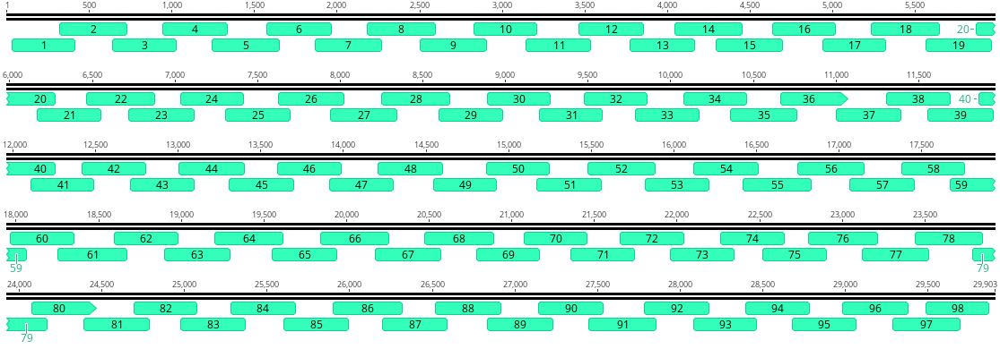
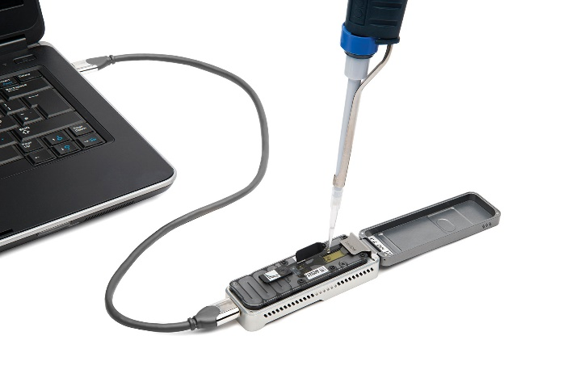
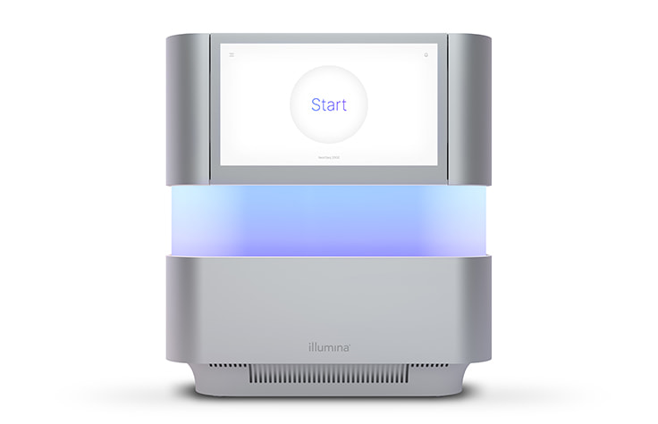
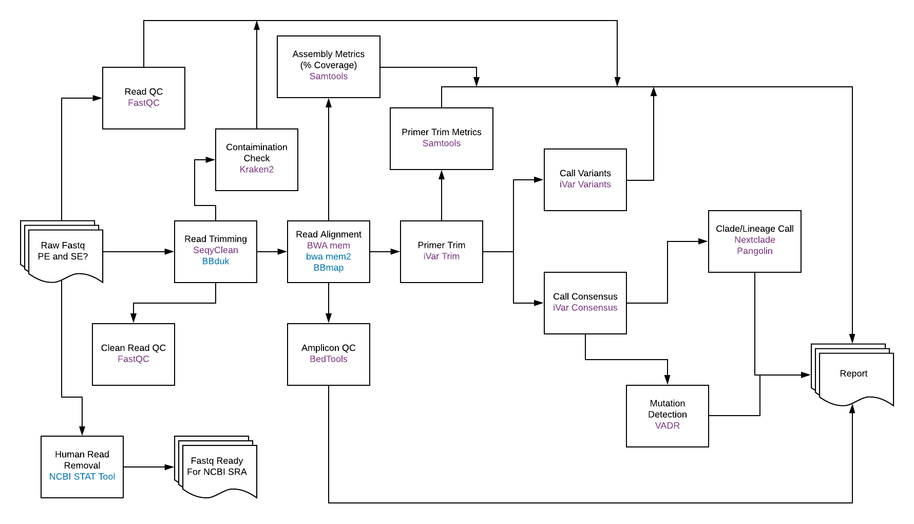
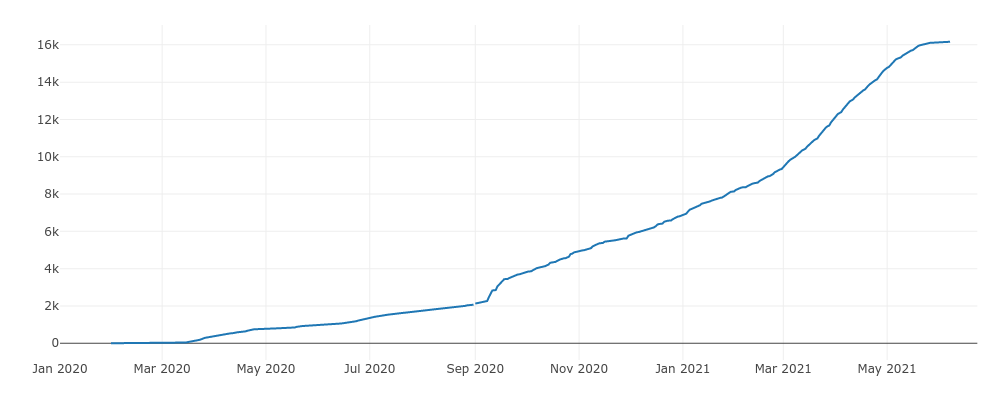
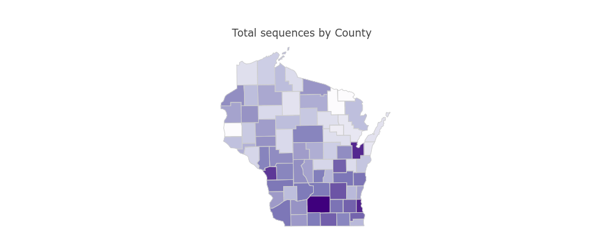
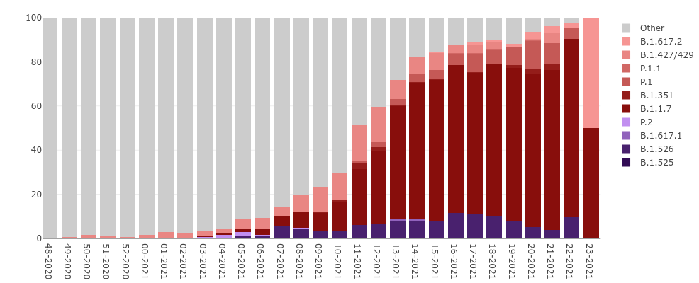
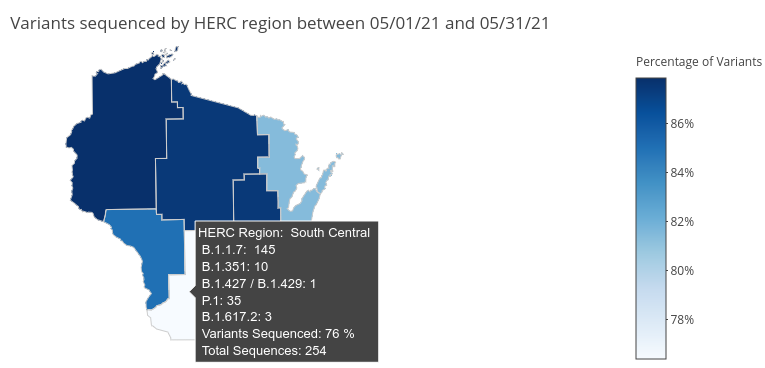

Tracking the spread of SARS-CoV-2 variants in Wisconsin
Wisconsin State Laboratory of Hygiene
Kelsey Florek, PhD, MPH
June 24, 2021
Slides live at:
www.k-florek.net/talks

Sequencing has become a key tool in understanding the transmission dynamics of disease outbreaks
SARS-CoV-2 Sequencing Approach
ARTIC Tiled Amplicon Sequencing Approach

Where we started in 2020
Illumina MiSeq

Oxford Nanopore MinION

Where we are in 2021
Illumina NextSeq 2000

Oxford Nanopore GridION
SARS-CoV-2 Sequence Analysis

Generating actionable data visualizations from complex genomics data.
- What is the current total of SARS-CoV-2 sequences?
- How many sequences are being generated each week?
- What proportion of sequences are variants of concern?
- How many B.1.1.7s are there?
- How many variants of concern are in my health jurisdiction?
- What about X,Y, or Z variant?
Cumulative SARS-CoV-2 Sequences in WI

SARS-CoV-2 Sequences by WI County

SARS-CoV-2 Variants in WI

Regional distribution of SARS-CoV-2 Variants

Summary
- SARS-CoV-2 genomics is a powerful tool that can help us better understand the pandemic
- WSLH has increased sequencing capacity to address outbreaks and provide surveillance
- Continuing development of data infrastructure
Acknowledgments
- Wisconsin State Laboratory of Hygiene
- Abigail Shockey
- Sara Wagner
- Alicia Mooney
- Mike Mamerow
- Rich Griesser
- Tonya Danz
- Erika Hanson
- Tracy Heidke
- Tim Davis